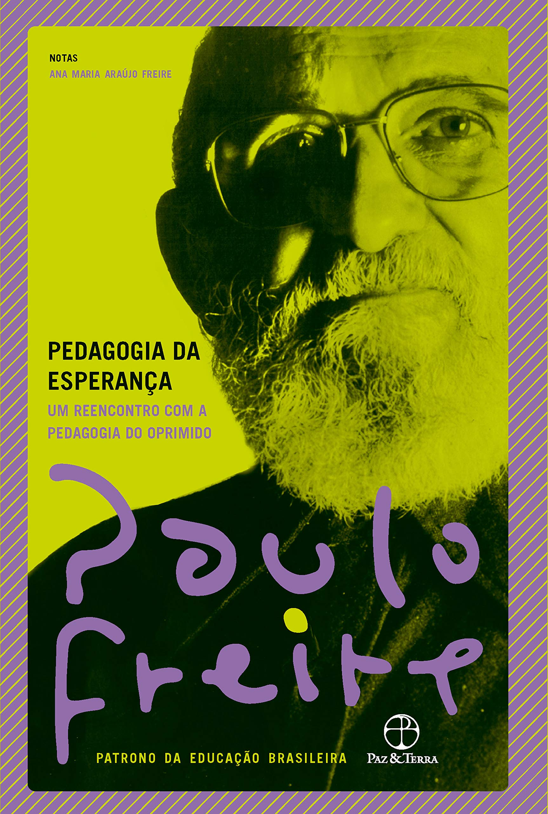

PEDAGOGIA DO OPRIMIDO
Pedagogia do oprimido, escrito entre 1964 e 1968, quando Paulo Freire estava exilado no Chile, foi proibido pela ditadura civil-militar do Brasil, onde permaneceu inédito até 1974. Ancorado em situações concretas, este livro desvela as relações que sustentam uma ordem injusta, responsável pela violência dos opressores e pelo medo da liberdade que os oprimidos sentem. É um livro radical, sobre o conhecer solidário, a vocação ontológica, o amor, o diálogo, a esperança e a humildade. Aborda a luta pela desalienação, pelo trabalho livre, pela afirmação dos seres humanos como pessoas, e não coisas. É destinado aos revolucionários, que se comprometem com os oprimidos, para, com eles e ao lado deles, lutar para construir um mundo em que seja mais fácil amar.

EDUCAÇÃO COMO PRÁTICA DE LIBERDADE
Educação como prática da liberdade foi escrito em 1967, durante o exílio forçado de Paulo Freire no Chile. Tem como principal objetivo alcançar a educação que liberta seres humanos da condição de oprimido e os insere na sociedade como forças transformadoras, críticas, politizadas e responsáveis por todas as pessoas que a integram.
PEDAGOGIA DA ESPERANÇA
Em Pedagogia da esperança, de 1992, Paulo Freire faz uma reflexão sobre a Pedagogia do oprimido, um reencontro com ela, com suas vivências em quase três décadas nos mais diferentes cantos do mundo. O livro, atual e imprescindível, conta ainda com a colaboração de Ana Maria Araújo Freire, através de notas explicativas.